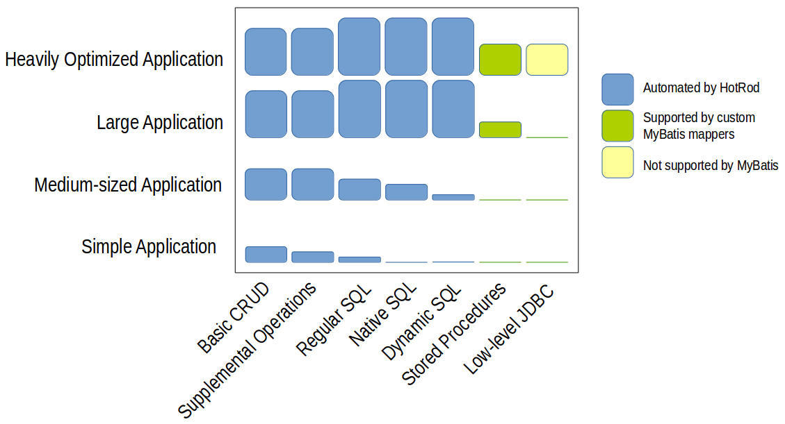

Advanced Database Persistence for Java
Examples & Reference Manual
|
Advanced Database Persistence for Java Examples & Reference Manual |
Since its inception the vision of HotRod has been to automate all SQL and JDBC code that can be automated, to save your wits for the complexity of the application, not the trifles of SQL and JDBC.
HotRod's goal is to dramatically reduce the effort to produce a simple yet efficient persistence layer for your Java application. Producing the whole persistence layer with HotRod becomes very cheap all the while being very powerful and easy to use.
HotRod defines the persistence layer of a Java application as all the Java classes and their operations that allow the application to interact with the database in order to retrieve data or to produce data changes in the database: in sum all the DAO classes and their corresponding SQL select, insert, update, and delete statements—simple or complex—the application needs to fully communicate with the database.
HotRod initially produces all these DAO Java classes with their operations using the existing database structure; later on, it refreshes them over time according to the changes this structure will necessarily suffer time and time again.
To put it simply, the bulk of the effort of the persistence layer is to produce fully functional DAOs and VOs. In HotRod a DAO presents the persistence operations as methods and doubles itself as a VO with properties for each column. This way, HotRod produces one DAO for each table, view, and SQL select the developer needs to use.
Even though HotRod automates all the DAO generation it's worth to stopping here for a moment to understand the different steps required to do this and how different tools and technologies tackle (or not) each one of them. These details will serve you to notice how well HotRod measures against standard JEE persistence technologies, and well known Java libraries, and tools.
If a developer were writing each DAO manually the effort could be divided into the following coding steps:
Step (1) and (2) are for the most part trivial. Some effort is needed to decide the best types for each column, but once a good rule is decided they become easy, though tedious.
The bulk of the effort is usually on step (3). The more columns, parameters, and non-trivial types (read BLOB, custom types, XML types, or other), the more expensive it gets to develop and test this step.
Even though step (4) is not expensive to write, it's error prone. Inexperienced developers—and experienced too, unfortunately—usually do not address the error conditions correctly causing memory leaks in the application.
Now, does the advanced automation HotRod offers matter? Does it really save time, budget, and sleepless nights?
The effort savings are clearly apparent on all but the most tiny applications. The savings are much more pronounced the bigger and more complex the application becomes—when complex and optimized SQL is needed.
The cost of coding the persistence layer is heavily influenced by the natural complexity of the application being built and by the desired level of optimization of the database operations. The more complex the application (e.g. large and convoluted SQL, great many columns, complex data types, etc.), the more expensive the coding becomes. The higher the level of optimization (e.g. when using native database constructs, when dealing with massive amount of data, etc.) the more expensive the code also becomes.
Now, in terms of cost, we can divide the persistence operations in the following categories:
These are the most basic database operations that interact with the database tables and views. They include the typical select by PK, update by PK, delete by PK, and insert using sequences or auto-generated PKs.
These are extra operations on top of the CRUD that expand the functionality using more advanced database metadata. They usually include select, update, and delete by example. They also leverage the database constraints to navigate the data model using unique constraints and foreign key relationships.
These are standard fully fledged custom SQL statements. Their complexity ranges from the very simple to quite sophisticated, tuned, parameterized SQL selects, updates, deletes, and inserts that may return combined, grouped columns from different tables and views. They may also produce changes in the database using complex updates, insert, or delete operations. They usually include one or more of the following features:
These are non-standard SQL statements that include
RDBMS-specific SQL extensions. They may also be sophisticated
and tuned parameterized SQL selects, updates, deletes, and
inserts. They usually include one or more of the features below:
Use RDBMS-specific strategies to lock rows and/or tables.
These SQL statements are carefully written to optimize the resources and execution speed. If well written they can also dramatically reduce the number of network calls and latency needed to produce the desired data retrieval or change.
These are Regular or Native SQL statements enhanced by an extra descriptive layer of logic that automatically alters their syntax and/or structure based on the parameters values received at runtime. Though quite exotic functionality can be achieved using dynamic SQL, the classic examples of it are SQL selects that filter rows by different columns conditions depending on logic related to the values of the received parameters at runtime, and/or sorts the rows differently depending on the parameter values.
Stored procedures represent application (or multi application-shared) logic located in the database itself. The development effort to implement them is two-fold: first, the stored procedure itself needs to be coded into the database; second, Java classes need to be written to properly call and use this procedure, send parameters, and receive results usually in the form of plain values, scalars, lists, or database cursors.
These SQL statements require low-level JDBC to usually access features such as updateable result sets, low-level locking, batch SQL processing, etc. Their coding becomes quite expensive if widely used across the application. This is usually needed for very optimized applications where system resources are very limited, or when processing very large amount of data.
HotRod automates the categories from A through E out of the box. Many competitor technologies tackle A and B, but rarely address C, D, and E. The majority of them do not automate complex, native, and dynamic SQL.
Categories F and G have a place on optimized applications. Though their coding effort is considerable, they must be addressed when the need rises. HotRod does not offer help for these cases so they must be coded manually.
As a general rule, simple applications tend to gravitate towards the usage of the first categories only, while complex ones use most of them. According to my personal experience, the chart below shows a overview of the popularity of the different categories on different kinds of applications. This is just meant as an high level overview, and may have many counterexamples you may have experienced, but tries to depict how the cost of development shifts between different kinds of application, or as it evolves over time as an application grows.
From left to right the coding effort of writing the code manually increases. So does the potential performance that can be obtained from the database and JDBC. As shown in blue, HotRod automates the bulk of this work.
Frequently, simple applications tend to use the first two categories since they are easier to implement and use. They tend to use the third, fourth, and fifth categories sparely since they are more expensive to develop, especially when coding everything manually. It's usually later when applications grow and have a bigger allocated budget when they devote effort to use more complex and optimal SQL.
The chart above shows in blue the areas where HotRod reduces the coding effort. This is where HotRod shines. In small applications the savings aren't major mainly because there's not much to develop. In medium-sized applications the savings are quite significant. In large applications the savings become very important, even when HotRod does not automate the stored procedure execution or the low-level JDBC. In heavily optimized applications HotRod still greatly saves effort in the main categories, but the heavily optimized areas need to be tackled manually.
Applications necessarily change over time. Manually keeping the SQL and DAOs up to date when a new column is added or modified to a table, view, or SQL select is an error prone task. Fortunately HotRod makes this effort very cheap. It retrieves the database modified structure and updates the DAO classes and related files seamlessly, without losing extra logic the developer may have added to the persistence logic.
Most competitor technologies offer the ability to retrieve the database changes but few of them can update the existing Java model and merge custom ad-hoc changes gracefully.
This automated maintenance functionality becomes quite important for long lived applications since they allow the developer to effortlessly keep the application up to date over time for every single inescapable database change.